1 安装MySQL
直接使用apt进行安装，默认将安装最新版本的MySQL（2022年3月最新版本为8.0.28）。
sudo apt-get install mysql-server 查看MySQL服务，如果已经成功启动说明安装成功。
systemctl status mysql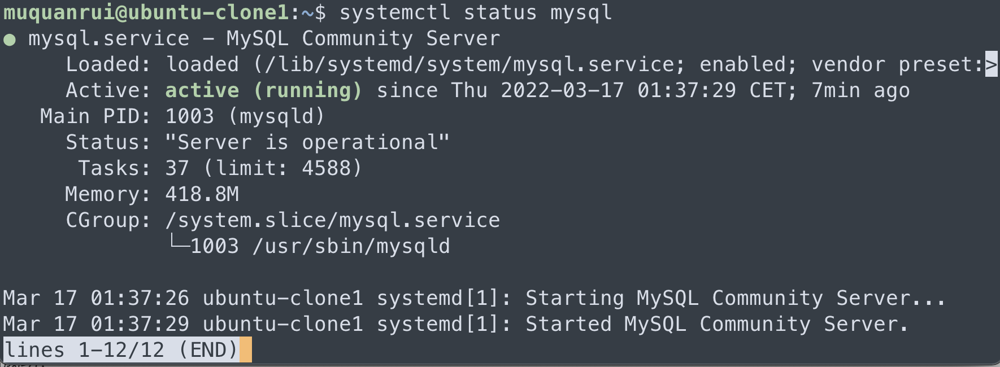
2 设置root用户的密码
mysql -uroot -p此时使用root账户登录数据库发现并不需要输入密码，直接回车就能进入，说明密码并没有被设置。
使用如下命令设置密码，再次尝试登录即可。
use mysql;
update user set authentication_string='' where user='root'; --将字段置为空
alter user 'root'@'localhost' identified with mysql_native_password by 'root'; --修改密码为1234563 设置远程登录
此时远程使用诸如Navicat等图形化数据库管理软件尝试远程连接发现并不能成功。
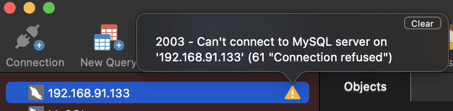
3.1 查看网络连接和端口状况
ping 192.168.91.133
nc -vz -w 2 192.168.91.133 3306发现和虚拟机（此时作为MySQL服务器）的网络连接是没问题的，但是却不能访问它的3306端口。
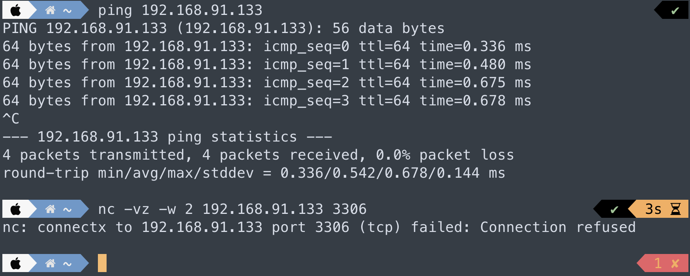
3.2 防火墙设置
首先查看客户机的防火墙设置，保险起见，如果是开启状态直接选择关闭。
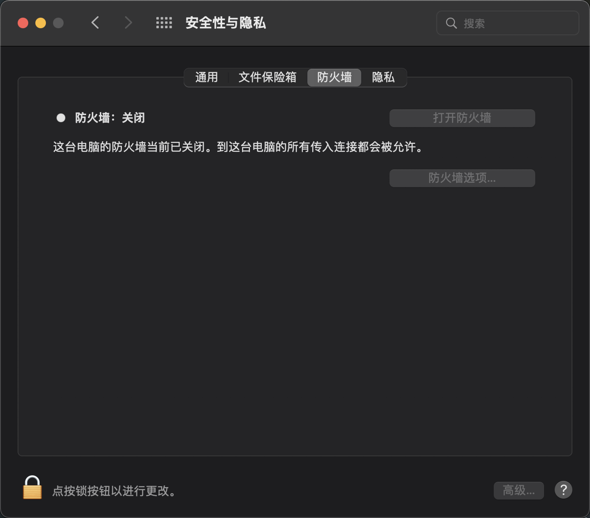
查看服务器防火墙设置，如果开启：
- 可以添加允许访问3306端口的规则，然后重启防火墙。
- 或者直接关闭防火墙。
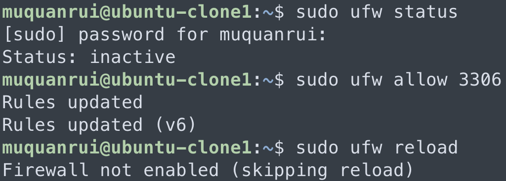
sudo ufw allow 3306 # 添加允许访问3306端口规则
sudo ufw delete allow 3306 # 删除允许访问3306端口规则
sudo ufw status # 查看防火墙状态
sudo ufw enable # 打开防火墙
sudo ufw disable # 关闭防火墙
sudo ufw reload # 重启防火墙3.3 使用root用户访问的主机设置
use mysql;
select host, user from user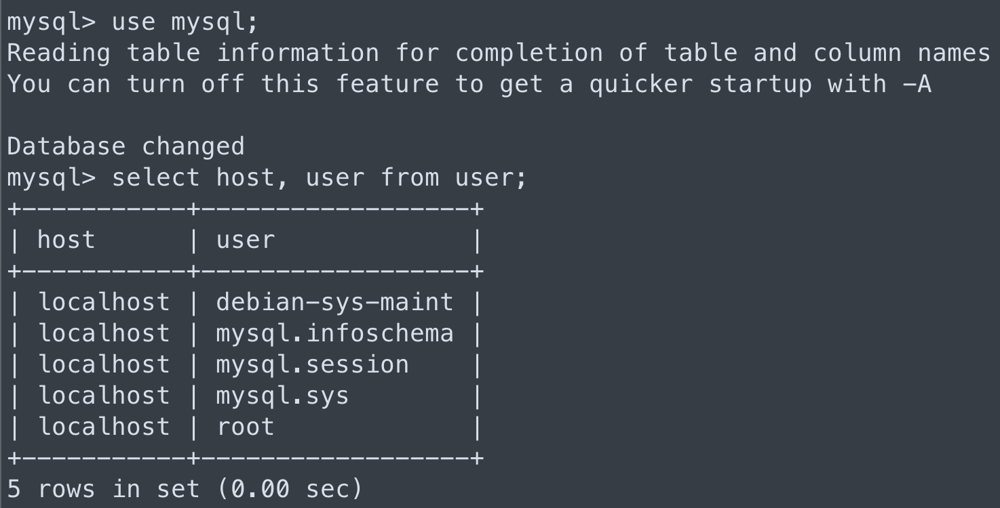
默认情况下，使用用户访问的host被设置为localhost，即只有本地主机能够使用该用户登录MySQL，因此需要修改为包括远程客户机IP在内的地址。
update user set host = '%' where user = 'root';
flush privileges; host设置为'%'表示任何IP都可以使用root登录，如果设置为192.168.91.%表示只有192.168.91这个网段下的主机可以使用。
3.4 3306端口监听的IP设置
完成和确认上述步骤后，发现还是没法远程连接，在服务器上查看3306端口状态：
netstat -apn|grep 3306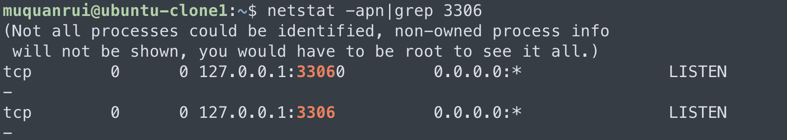
发现除了上一步root用户被限定只能被localhost使用外，3306这个端口的监听也仅被绑定到了本机！
一顿搜索后，了解到需要修改的是MySQL的配置文件my.cnf。
cd /etc/mysql/
sudo vi my.cnf但是这个文件却并没有相应设置参数：
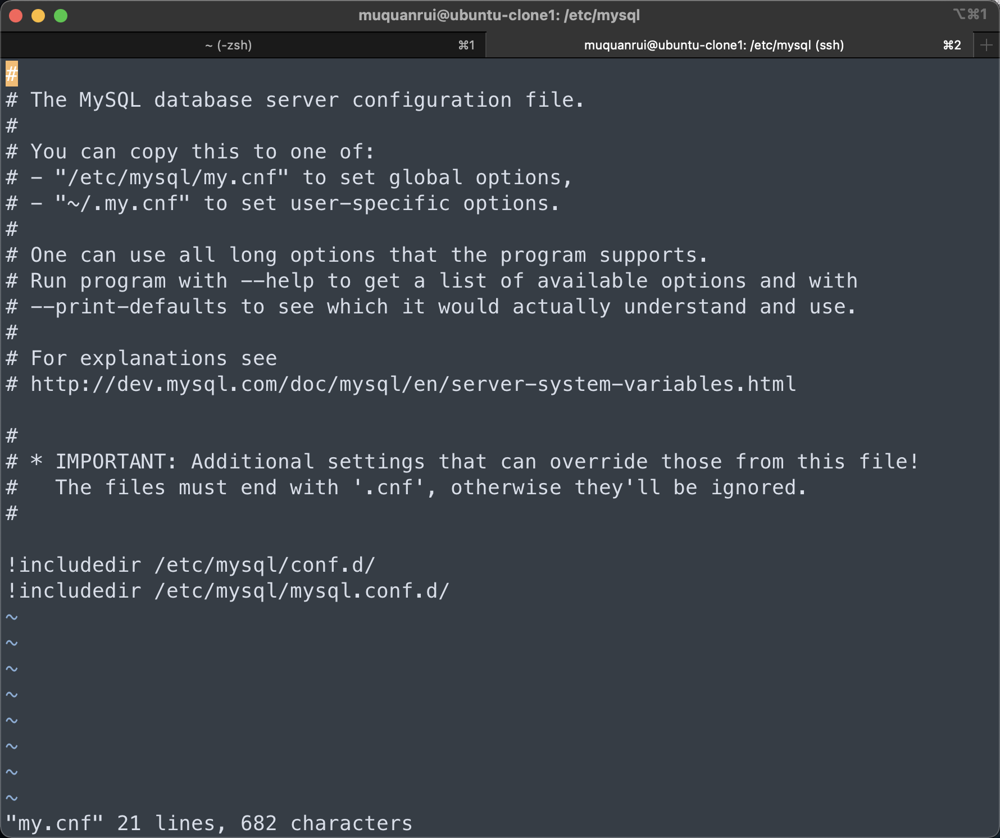
根据里面include的语句，找到配置文件的正确位置，在当前目录下的子目录mysql.conf.d里面。
cd /etc/mysql/mysql.conf.d/
sudo vi mysqld.cnf 找到bind-address 这行，直接注释掉，或者设置为0.0.0.0，表示3306端口可以监听任意IP的TCP连接请求。
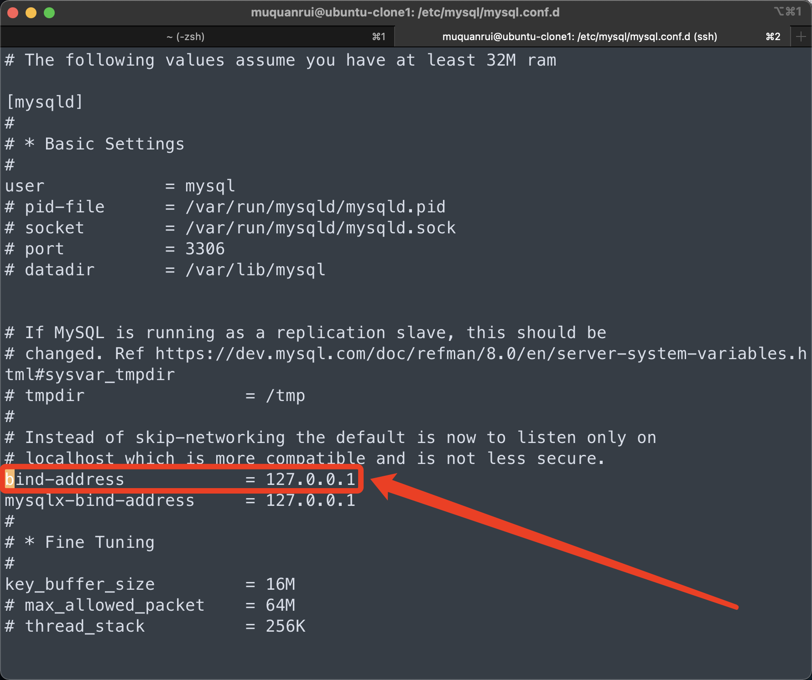
# bind-address = 127.0.0.1再次查看端口状态，已经被改变：
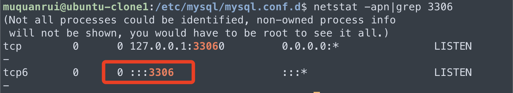
此时再次使用Navicat远程连接，Bingo！
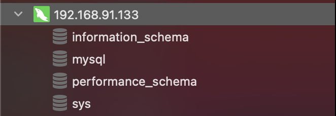
3.5 MySQL8.0密码加密的问题
最后一个可能出现的问题：对于版本不够新的可视化数据库管理软件，在尝试远程登录MySQL 8.0及以上版本会报错“Authentication plugin ‘caching_sha2_password’ cannot be loaded”。
这是由于8.0开始对用户密码使用了新的加密方法。这时候可以在服务器上登录MySQL，使用如下命令重新设置密码：
ALTER USER 'root'@'%' IDENTIFIED WITH mysql_native_password BY 'root';再次尝试连接，想必是能成了。
最后更新： 2023年01月01日 19:15